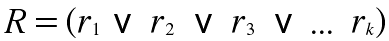

A rule-based classifier is a technique for classifying records using a ncollection of "if...then" rules. The rules for a given model are represented in a disjunctive normal form:
 In this case R is known as the rule set and the r's are the classification rules or dijuncts.
Each classification rule can be expressed in the following way:
The left hand side of the rule is called the rule antecedent or the precondition. A rule r covers a record x if the precondition of r mathces the attributes of x. r is also said to be fired or tirggeerd whenever it covers a given record.
The qulity of a classification rule can be ealuated using measures such as coverage and accuracy. Given a data set D and a classifciation rule r:A->y, the coerage rule is defined as the fraction of records in D that trigger the rule r. On the other hand it's accuracy or confidence factor is defined as the fraction of records triggered by r whose class labels are equal to y.
The formal Definitions of accuracy and coverage are below:
In the previous equations, |A| is the number of records that satisfy the rule antecedent, A and y is the number of records that astisfy both the antecedent and consequent, and |D| is the total number of records.
A rule-based classifier classifies a test record ased on the rule triggered by the record.
The rules in a rule set R are mutually exclusive if no two rules in R are triggered by the same record. This properity ensures that every record is covered by at most one rule in R.
A rule set R has exhaustive coverage if there is a rule for each combination of attribute value. This property ensures that every record is covered by at least one rule in R.
Together these properties ensure that every record is covered by exactly one rule. Unfortunately, many rule based calssifiers do not have such proerties. If the rule set is not exhaustive then a default rule must be added to cover the remaining test cases. If a rule set is not mutually exclusive then a record can be covered by several rules, some of which may predict conflicting cases. But the two ways of overcoming the rules are:
Rules in the rule set are ordered in adecresing order to their priority, which can be defined in may way. An ordered rules set is also known as a decision list. When a test record is presetnted, it is calssified by the highest-ranked rule that ocveres the record. This avoids the problem of having clonflicting classes predicted by multiple classification rules.
An unordered rules approach allows a test record to triggere multiple classification rules and consdiers the consequent of each rule as a vote fr a particualr class. The votes are then tallied to determin th class label of the test record. The record is ualally assigned to the class that receives the highest number of votes. In some cases, the vote may be weighted by the rule's accuracy. Using unordered rules to buld a rule-based calssifier has both advantages and disadvantages.
Unordered rules are less susceptible to erros caused by the wrong rule being selcted to classify a test record (unlike ordered ruls, which are sensitive to the coice of rule ordering criteria).
The model building is less expesive because the rules are not kept in order.
Calssifying a record can be quite expensive task because the attributes of the test record must be compared against the precondition of every rule in the rule set.
The sequential covering algorithm is ofent used to extract rules directly form data. Rules are grown in a greedy fashipn based on tacertain evaluation measur. The algorithm extracts the rules one class at a time from data sets that contain more than two calsses. The criterion for deciding which calss should be generated first depends on a number for factors, shcuh as the class prevelance or the cost of misclassifying records from a given class.
* Acts as highly expressive as a decision tree
* Easy to interpret
* Easy to generate
* Can classify new instanes rapidly
* Perfromance comparable to decision trees
* Manual Design
* Poor Reproducablity
* Poor Evaluation Methods (such as resubstitution)
* Large Overtraining Effect